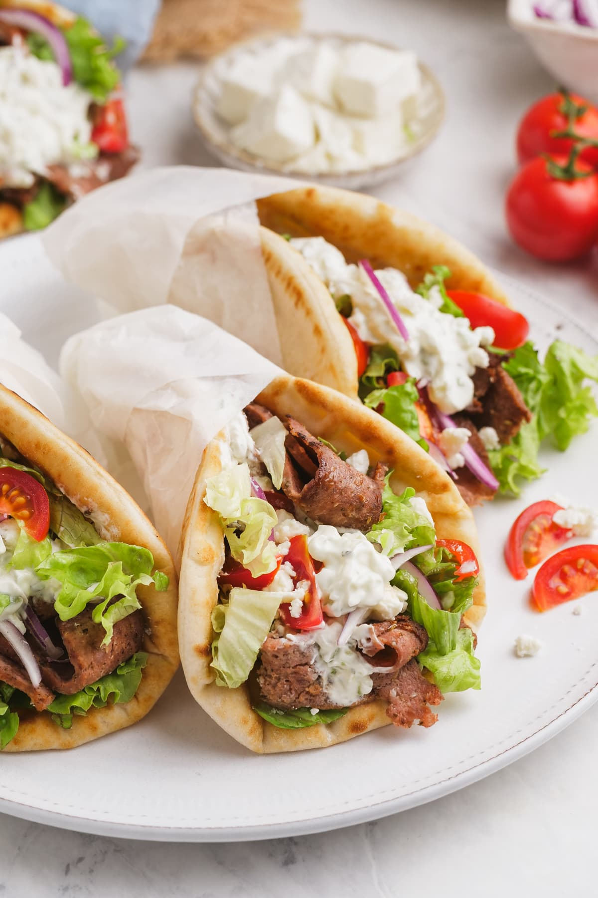

Gyros

Ingredients
- 1 small onion, cut into chunks
- 1 pound ground lamb
- 1 pound ground beef
- 1 tablespoon minced garlic
- 1 teaspoon dried oregano
- 1 teaspoon ground cumin
- 1 teaspoon dried marjoram
- 1 teaspoon dried thyme
- 1 teaspoon dried rosemary
- 1 teaspoon freshly ground black pepper
- 1/4 teaspoon sea salt
- 12 tablespoons hummus
- 12 pita bread rounds
- 1 small head lettuce, shredded
- 1 large tomato, sliced
- 1 large onion, sliced
- 6 ounces crumbled feta cheese
- 24 tablespoons tzatziki sauce
Steps
- Place onion in a food processor and finely chop. Transfer onion to a piece of
cheesecloth and squeeze out the liquid. Place onion in a bowl.
- Mix lamb, beef, garlic, oregano, cumin, marjoram, thyme, rosemary, black pepper,
and salt with the onion using your hands until well mixed. Cover bowl with plastic
wrap and refrigerate until flavors blend, about 2 hours.
- Preheat the oven to 165 degrees Celcius (325 degrees Fahrenheit)
- Place meat mixture in a food processor and pulse until finely chopped and tacky,
about 1 minute. Pack meat mixture into a 7x4-inch loaf pan, ensuring there are no air
pockets. Place the loaf pan into a roasting pan and pour enough boiling water around
the loaf pan to reach halfway up the sides for a water bath.
- Bake in the preheated oven until no longer pink in the center, 45 to 60 minutes.
An instant-read thermometer inserted into the center should read at least 74 degrees
Celcius (165 degrees Fahrenheit). Pour off any accumulated fat and cool slightly.
- Thinly slice the cooked gyro meat loaf.
- Spread 1 tablespoon hummus onto each pita bread. Then top each with some of the
gyro meat slices, shredded lettuce, tomato slices, red onion slices, feta cheese
crumbles, and 2 tablespoons tzatziki sauce to complete each sandwich.